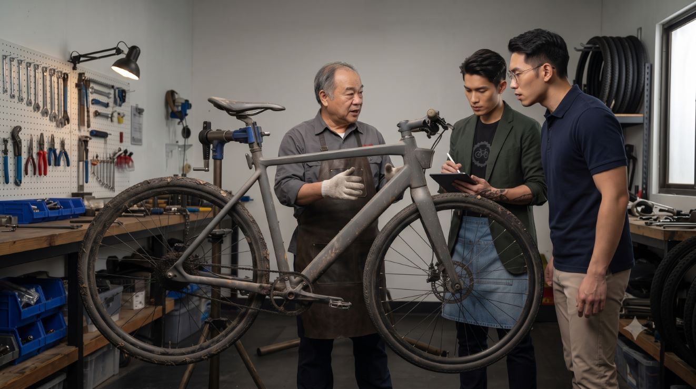
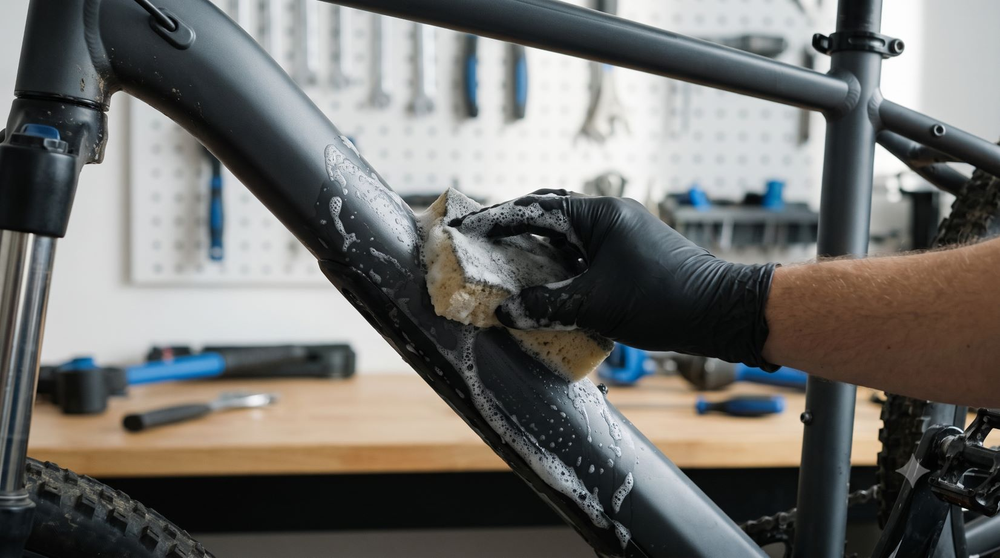
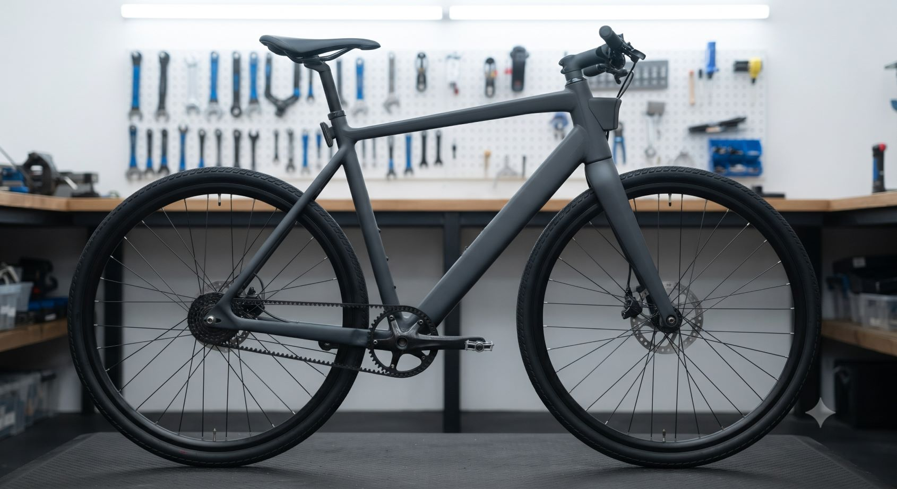

自行車專業保養 — 腳本企劃
透過「痛點引導 → 專業信任 → 精細保養 → 滿意騎行」的節奏，展現極致的服務質感。
分鏡腳本細節 (全 15 鏡)
01
5秒
髒污鏈條特寫
畫面動態
鏡頭由遠慢慢拉近，特寫鏈條與飛輪上積滿的黑油垢與沙塵。
聲音與文字
背景音樂沉重低回。旁白：「你的愛車，是不是很久沒有好好呼吸了？」
02
6秒
變速卡頓與異音
畫面動態
踏板轉動時出現跳齒、鏈條發出摩擦聲，畫面小幅震動強調卡頓感。
聲音與文字
收錄清晰的金屬摩擦聲。字幕標註：「異音、卡頓、磨損增加」。
03
5秒
推車進店接待
畫面動態
車主將車推進明亮乾淨的門市，技師微笑親切前來迎車接待。
聲音與文字
音樂轉為輕鬆明快。旁白：「交給專業，讓保養變簡單。」
04
5秒
全車點檢紀錄
畫面動態
技師拿著檢測表，逐一確認煞車、胎壓與傳動耗損，並向車主說明。
聲音與文字
旁白：「標準化 20 項全車健檢，不放過任何安全細節。」
05
5秒
鏈條規精準量測
畫面動態
特寫鏈條量測規卡入鏈條，精準判定伸長量與更換需求。
聲音與文字
畫面出現數據化特效：「拉伸率測量中」。
06
6秒
架車拆解零件
畫面動態
將車架上修車架，快速流暢地卸下後輪與傳動系統元件。
聲音與文字
節奏感強烈的音樂點擊聲。字幕：「專業拆卸，深層保養」。

07
6秒
噴洗劑泡沫溶解
畫面動態
噴上專用清潔泡沫，特寫油垢隨泡沫迅速融化流下的療癒畫面。
聲音與文字
收錄滋滋作響的泡沫聲。旁白：「專用除油劑，秒速瓦解頑固油垢。」
08
6秒
專用洗鏈刷刷洗
畫面動態
技師手持多角度刷具，仔細刷洗飛輪齒片與鏈條轉軸死角。
聲音與文字
刷洗的沙沙聲。字幕：「細節到位，死角徹底乾淨」。
09
5秒
清水沖洗乾淨
畫面動態
低壓水槍沖洗掉泡沫，露出底下金屬原色的光澤感。
聲音與文字
清爽的水流聲。旁白：「還原金屬原本的耀眼質感。」
10
5秒
高壓風槍徹底吹乾
畫面動態
使用風槍吹除鏈條與螺絲縫隙中的殘留水滴，防範生鏽。
聲音與文字
風槍風吹聲。字幕：「完全乾燥，防鏽第一步」。

11
5秒
鏈條上油潤滑
畫面動態
轉動踏板，逐節均勻點上專用鏈條潤滑油，並拭去多餘油份。
聲音與文字
滴油聲。旁白：「精密上油，降低磨損與運轉阻力。」

12
5秒
扭力板手標準組裝
畫面動態
技師使用專業扭力板手，依原廠規範數值精準鎖緊各部位螺絲。
聲音與文字
扭力板手咔嗒聲。字幕：「標準扭力鎖附，確保安全無虞」。
13
6秒
變速微調測試
畫面動態
手轉踏板並快速切換變速把手，特寫鏈條在飛輪間滑順升降檔。
聲音與文字
清脆檔位聲。旁白：「精細微調，檔位切換乾脆俐落。」
14
6秒
煥然一新對比
畫面動態
畫面前後切換對比：保養前的油垢泥沙 vs 保養後發光的傳動系統。
聲音與文字
明亮高潮音樂。字幕：「告別卡頓，重獲新車般的順暢體驗」。
15
5秒
滿意騎行與品牌號召
畫面動態
車主順暢騎行於陽光街道上，畫面定格品牌 Logo 與預約資訊。
聲音與文字
旁白：「定期保養，享受每一次純粹的騎行。」字幕：「立即預約」。